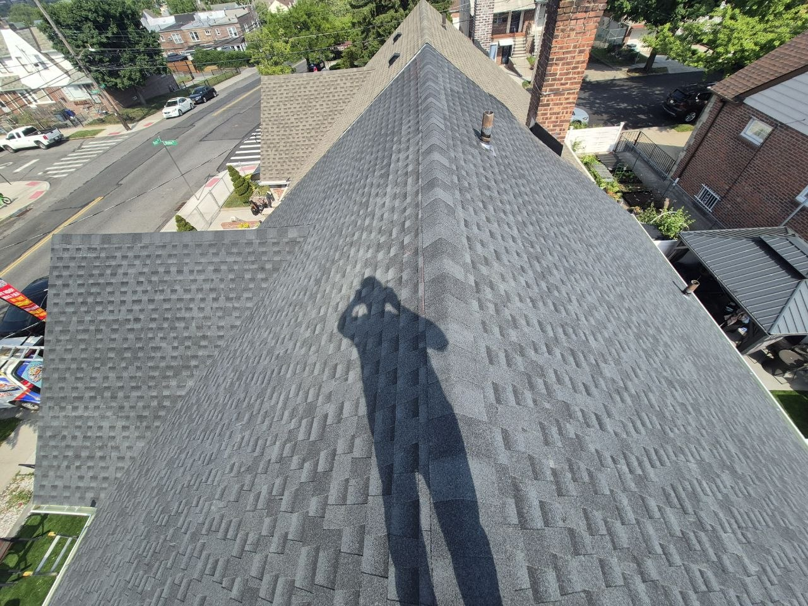
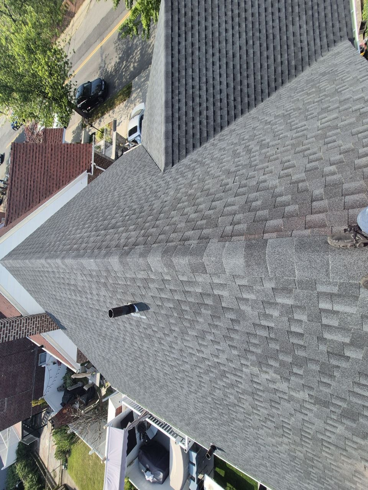
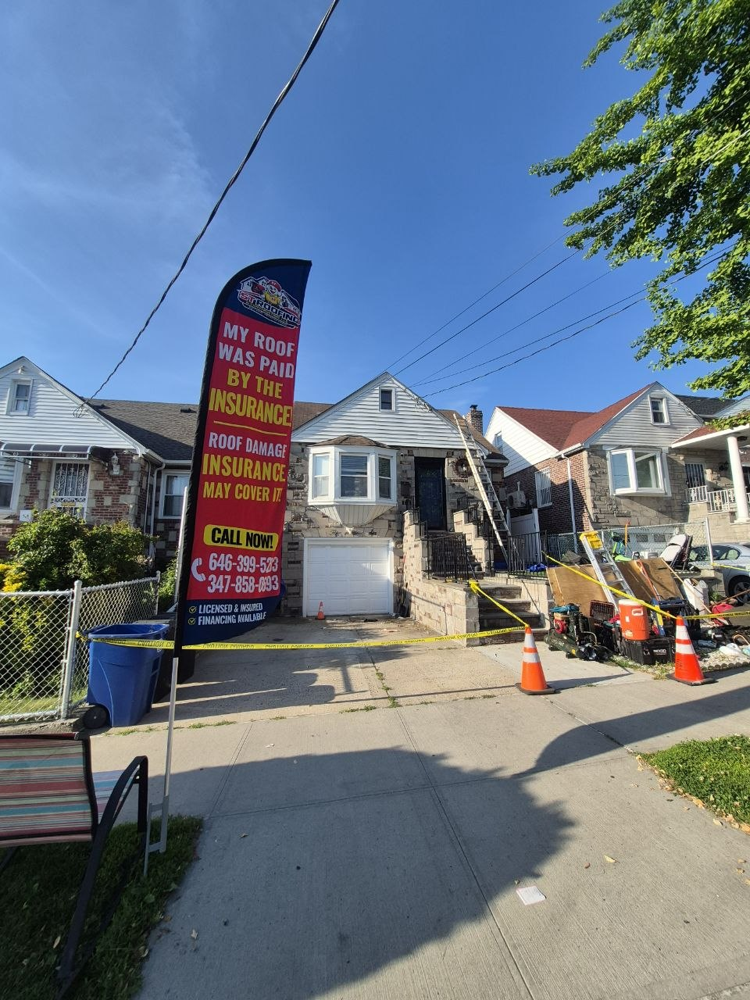

We help homeowners navigate the insurance claims process and get fair settlements for roof and storm damage.
Dealing with insurance claims after roof damage can be overwhelming. The paperwork, negotiations, and back-and-forth with adjusters can stress anyone out. ST Roofing & Construction LLC makes the process easy. We have extensive experience helping homeowners navigate insurance claims and get fair settlements for their roof damage.
From the initial inspection to the final repairs, we guide you through every step of the claims process. We document damage thoroughly, work directly with your insurance adjuster, and ensure you understand your coverage. Our goal is to help you get the compensation you deserve to restore your home.
Important: We never guarantee claim approval - final decisions are made by the insurance company. But we do everything in our power to present a strong, well-documented claim.
Thorough photo documentation of all damage to support your claim with visual evidence.
Comprehensive roof inspection identifying all damage, both visible and hidden.
We meet with your insurance adjuster on-site to ensure nothing is missed.
Detailed estimates that match insurance industry standards for fair compensation.
We inspect your roof thoroughly, documenting all damage with photos and detailed notes.
We guide you on how to file your claim and what information to provide to your insurance company.
We meet with the insurance adjuster on-site to ensure all damage is properly documented and acknowledged.
Once your claim is approved, we complete the repairs according to the approved scope of work.
Missing shingles, lifted flashing, and structural damage from strong winds and storms
Dented shingles, damaged flashing, and granule loss from hail storms
Damage from trees, branches, and other debris falling on your roof
Damage from ice dams causing water backup and infiltration
Get expert guidance through the claims process. Free roof inspection!
Click any photo to view full size.





Most homeowner's insurance policies cover roof damage caused by sudden, accidental events like storms, wind, or fallen trees. Damage from lack of maintenance or normal wear and tear is typically not covered. Your policy details determine coverage - we can help you understand what's covered.
The timeline varies depending on the complexity of the claim and your insurance company's processes. Some claims are approved in a few weeks, while more complex ones may take longer. We work to make the process as smooth and quick as possible.
If your claim is denied, we can help you understand the denial reason and explore options for appeal. Sometimes additional documentation or a re-inspection can lead to approval. We're experienced in dealing with claim disputes.
This depends on your policy's deductible and coverage. Typically, you'll pay your deductible upfront, and the insurance company pays the rest directly to the contractor. We can explain the financial process during our consultation.